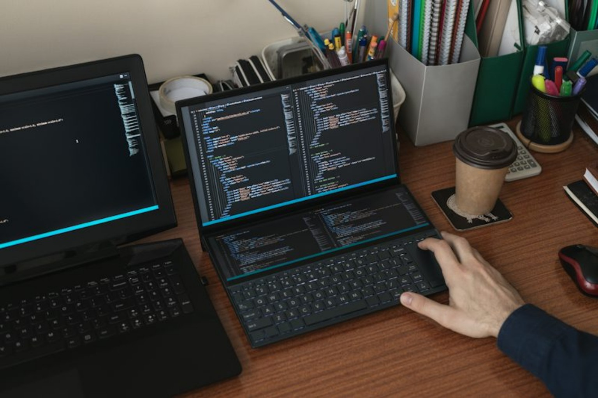
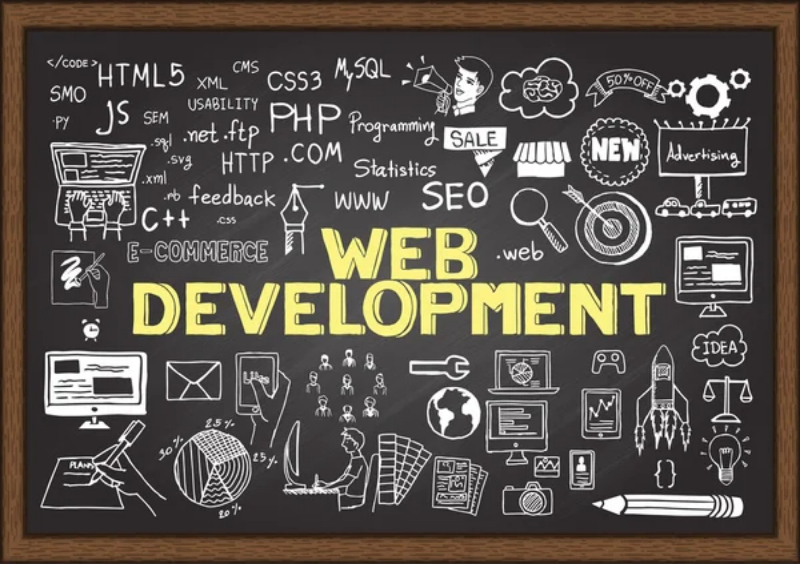

DevOps & déploiement
Accompagnement du cycle de vie des applications : automatisation des tâches, intégration et déploiement continus, gestion des environnements et fiabilisation des mises en production.
CE QUE JE PROPOSE
De la création de sites vitrines à la conception d’applications, avec une attention particulière à la sécurité, aux performances et à l’expérience utilisateur.
Accompagnement du cycle de vie des applications : automatisation des tâches, intégration et déploiement continus, gestion des environnements et fiabilisation des mises en production.
Création de sites vitrines, portfolios et applications web avec des interfaces claires, responsives et faciles à utiliser.
Conception de visuels de communication : affiches, flyers, publications pour réseaux sociaux et identité graphique.
Création et personnalisation de sites WordPress : pages professionnelles, présentation d’activité, blog et gestion de contenu.
Conception d’interfaces et de fonctionnalités pour des applications web et des projets mobiles adaptés aux besoins du client.
Sensibilisation aux bonnes pratiques : sécurisation des comptes, mises à jour, sauvegardes, protection des données et notions de sécurité réseau.
PROJET À DÉCOUVRIR
Conception d'une plateforme web pour faciliter le suivi des stagiaires : gestion des profils, présences, notes, projets et attestations.
Projet réalisé dans le cadre de ma formation en informatique.TECHNOLOGIES & UNIVERS
Quelques visuels qui illustrent les domaines que j’explore et les services proposés par LUC-DEV.
Analyse, vigilance et protection des environnements numériques.
Bonnes pratiques pour réduire les risques et protéger les données.
Confidentialité, sauvegarde et gestion responsable des accès.
Découverte des réseaux, services et mécanismes de protection.
Sites vitrines modernes, responsives et adaptés aux mobiles.

DEVOPS & CODECode, versionnement, automatisation et déploiement progressif.

WORDPRESS & WEBDes sites de présentation pour valoriser une activité ou un service.
Les exemples ci-dessus présentent mes domaines de travail et un projet de formation. D'autres réalisations pourront être ajoutées au fil de mon parcours.